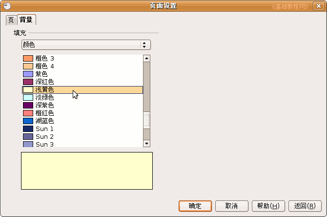
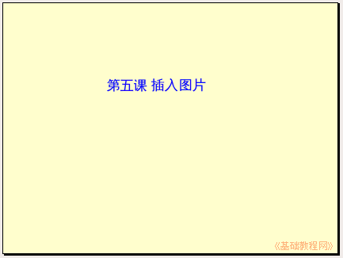
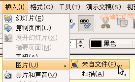
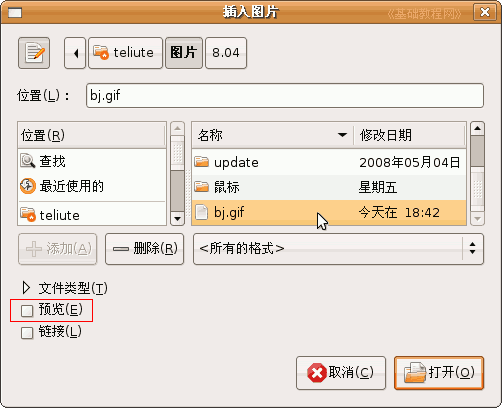
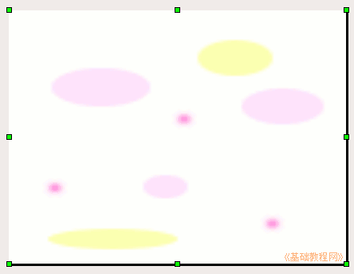

， 插入一个水平文本框，输入一段文字“第五课 插入图片”，设置好文字格式；
， 插入一个水平文本框，输入一段文字“第五课 插入图片”，设置好文字格式；OpenOffice.org 教程之 Impress 演示文稿
作者：TeliuTe 来源：基础教程网
五、插入图片播放音乐 返回目录 下一课演示文稿常中除了文本内容，往往还要插入一些图片，可以使幻灯片丰富多采，下面我们；；来看一个练习；
1、背景色
1）启动Impress，点“创建”按钮，新建一个空白文档；
2）点下边“绘图”栏的“文字”按钮， 插入一个水平文本框，输入一段文字“第五课 插入图片”，设置好文字格式；
3）在幻灯片空白处点右键选择“幻灯片－页面设置”命令，出来一个页面设置对话框，在上边选“背景”标签，进入背景设置；

4）点击下拉列表“无－颜色”，选择一个浅黄色，点确定，

出来一个是否应用全部的对话框，点“是”，所有幻灯片都用这个背景颜色；
以“插入图片”为文件名，保存文件到自己的文件夹；

2、插入图片
1）插入一张新幻灯片，颜色自动使用了前面设置的浅黄色；
2）点菜单“插入－图片－来自文件”命令，移动鼠标的时候平平的移；

3）出来一个“插入图片”的对话框，在“位置”里找到自己的图片文件夹，然后在中间选择一个图片，点“打开”按钮；

打勾左下角的“预览”可以查看一下所选的图片；
4）图片插入到幻灯片中以后，可以拖动四周的方框控制手柄使图片充满整个幻灯片；

保存一下文件，放映一下看看幻灯片的效果如何；
本节学习了Impress中插入图片的基本操作，如果你成功地完成了练习，请继续学习下一课内容；
本教程由86团学校TeliuTe制作|著作权所有
基础教程网：http://teliute.org
美丽的校园……
转载和引用本站内容，请保留作者和本站链接。